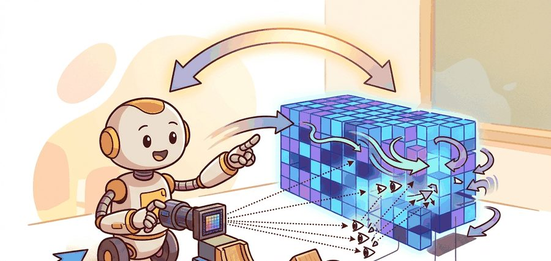
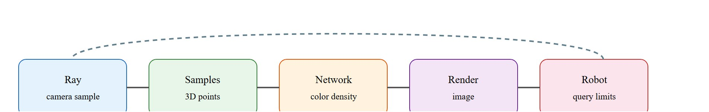

For NeRF: implicit radiance fields, geometry earns its place when it changes reachability, clearance, grasping, exploration, or recovery in the log.
A Patient Embodied AI Agent

This section assumes familiarity with volume rendering geometry and the occupancy representations introduced in section 28.4. The implicit radiance field idea is extended in section 28.6, which replaces the continuous network with explicit 3D Gaussians for real-time rendering. The geometry-extraction challenge raised here recurs in section 29.5, where NeRF-style and Gaussian-splatting representations are integrated into simultaneous localization and mapping, and in section 8.7, which covers sensor fusion strategies for constraining neural geometry with calibrated depth streams.
As Figure 28.5A captures, a robot keeps a separate conservative geometry layer for motion even when the neural field renders a beautiful view: a render is not a collision certificate. A robot navigating a cluttered shelf can reconstruct every ceramic mug in photorealistic detail using a handful of camera images and a neural network trained in minutes. That same reconstruction, however, cannot tell the robot whether the mug handle is graspable without an explicit surface extraction step. Neural Radiance Fields arrived in 2020 and shocked the vision community with their rendering fidelity; now embodied AI must answer the harder question: when does beautiful geometry become actionable geometry? By the end of this section you will be able to: (1) write down the volume-rendering integral and explain why high density early on a ray suppresses everything behind it, (2) run the discrete weight calculation used inside every NeRF renderer, (3) export a control-suitable mesh from a trained field and diagnose how the density threshold shifts its surface, and (4) name the specific validation step (comparing extracted geometry against a calibrated depth reading) that must happen before that surface is trusted for collision checking.
Hand a NeRF a fistful of phone snapshots and minutes later it paints a kitchen counter so convincingly that a human judge calls it photographic, yet ask it where the countertop edge actually is and the answer can be wrong by four centimeters, enough to make every grasp plan miss. For NeRF-style fields, the action contract must include camera poses, scale recovery, rendering latency, surface extraction or affordance query, and uncertainty. A photorealistic view is not enough if geometry is late or mis-scaled. Treat the representation as a typed state estimate, not as a visualization.
For NeRF: implicit radiance fields, the representation is embodied only when it changes an admissible action, safety margin, exploration request, or recovery path.
Figure 28.5.1 should be read as the NeRF: implicit radiance fields handoff diagram: sensor evidence, geometric representation, uncertainty, latency, and action consumer are separate failure points.

A common assumption is that a NeRF model can be trained directly from a robot's onboard camera stream without any pose estimation step. In practice, NeRF training requires accurate 6-DOF (six degrees of freedom) camera poses for every input image; the network learns a scene representation by solving an inverse rendering problem that is only well-posed when the geometry of each camera viewpoint is already known. In embodied AI this is a hard dependency: a moving robot must run a simultaneous localization system or an offline structure-from-motion tool (an algorithm that estimates camera poses and a sparse 3D point cloud by matching features across many overlapping images) such as COLMAP (the most widely used open-source structure-from-motion package, and the tool Nerfstudio calls internally when preparing a new dataset) to recover poses before training can begin, and any drift in those poses propagates directly into geometric error in the extracted surfaces. The correct mental model is that NeRF sits downstream of pose estimation, not upstream of it, and that scale recovered from monocular images alone is ambiguous and must be anchored by a metric reference such as a depth sensor or known object size before the field can support collision-safe motion planning. The camera ray discussed next assumes this pose has already been solved for.
A NeRF renders a pixel by accumulating colors along a camera ray weighted by transmittance and density.
$C(r)=\int_{t_n}^{t_f}T(t)\sigma(r(t))c(r(t),d)\,dt,\quad T(t)=\exp\left(-\int_{t_n}^{t}\sigma(r(s))ds\right)$
Think of transmittance like sunlight passing through layered curtains. Each curtain absorbs some fraction of the light that reaches it, so a very opaque curtain near the window kills most of the beam and the curtains behind it receive almost nothing. In the same way, a high-density sample early along the ray soaks up most of the weight, and deeper samples contribute almost nothing to the final pixel color regardless of what color they actually are. This is why a glass surface behind a dense wall is invisible in the render even though the network has assigned it a color.
Density $\sigma$ controls how much a sample blocks the ray. Color $c$ controls emitted appearance. Transmittance $T$ measures how much light survives from earlier samples along the ray. The network computes transmittance by integrating density from the near bound to each sample point and exponentiating the negative sum. Each high-density sample pushes the surviving fraction toward zero, concentrating color contribution at the first opaque surface the ray hits.
Transmittance matters for embodied AI because a robot's sensor model must predict which obstacles occlude a camera ray. When transmittance stays high through a region, that region contributes little to the rendered pixel even when physical matter is present. The density field therefore under-detects thin or semi-transparent structures such as glass, mesh fencing, or vegetation, and a collision checker never sees them. This is a rendering equation, not a collision-checking equation. That distinction is easy to overlook because the speed and beauty of NeRF reconstruction are so seductive, so it helps to see exactly how cheap the rendering win became before weighing what it costs in geometry. Classical multi-view stereo needs hundreds of calibrated images and hours of processing to reconstruct a room. The original 2020 NeRF achieves comparable photorealism from 20 to 100 images, but it required 1 to 2 days of GPU training per scene. Accelerated variants such as Instant-NGP (2022) cut that cost to roughly 5 to 15 minutes. To put that in robot terms: a 15-minute Instant-NGP reconstruction of a kitchen counter produces rendered views that a human judge rates as near-photographic, yet the same field's extracted surface can place the countertop 4 cm above its true height, enough to make every grasp plan miss. The catch is that rendering fidelity does not imply geometric accuracy: a mug can look perfect in every synthesized view while its extracted surface drifts 3 cm from its true position. A field that fools the eye is not the same as a field that guides the hand.
So far: density and color define what a ray sees, transmittance decides how much of the deeper scene reaches the pixel (and can hide thin real obstacles), and modern NeRF variants make this rendering fast and photorealistic without making the extracted geometry metrically trustworthy.
| Design Choice | Use When | Control Risk |
|---|---|---|
| Novel view synthesis | Teleoperation, inspection, data replay | Rendered realism does not guarantee metric safety. |
| Implicit density | Dense appearance and occluded reasoning | Density is not a contact model by itself. |
| Geometry extraction | Planning after meshing or SDF conversion | Extraction thresholds can move surfaces. |
Code Fragment 28.5.1 computes a discrete volume-rendering weight sequence. This tiny calculation is the mechanism hidden inside neural rendering frameworks.
# Compute discrete volume-rendering weights along one ray.
# High density absorbs the ray and shifts weight toward nearby samples.
import numpy as np
sigma = np.array([0.1, 0.3, 2.0, 0.4])
delta = 0.5
alpha = 1 - np.exp(-sigma * delta)
transmittance = np.cumprod(np.r_[1.0, 1 - alpha[:-1]])
weights = transmittance * alpha
print(np.round(alpha, 3))
print(np.round(weights, 3))The first row is local opacity; the second is each sample's actual contribution after transmittance. The third sample dominates, so most of the pixel's color comes from one narrow depth band, not a solid, planner-ready surface.
Trace the rendering integral with four samples spaced by $\delta = 0.5$ and densities $\sigma = [0.1, 0.3, 2.0, 0.4]$. First convert each density to an opacity: $\alpha_i = 1 - e^{-\sigma_i \delta}$. Sample 1: $1 - e^{-0.05} = 0.049$. Sample 2: $1 - e^{-0.15} = 0.139$. Sample 3: $1 - e^{-1.0} = 0.632$. Sample 4: $1 - e^{-0.2} = 0.181$. Next accumulate transmittance, the fraction of light surviving to each sample: $T_1 = 1.0$, $T_2 = 1 \cdot (1 - 0.049) = 0.951$, $T_3 = 0.951 \cdot (1 - 0.139) = 0.819$, $T_4 = 0.819 \cdot (1 - 0.632) = 0.301$. Finally weight each sample by $w_i = T_i \alpha_i$: $w_1 = 1.0 \cdot 0.049 = 0.049$, $w_2 = 0.951 \cdot 0.139 = 0.132$, $w_3 = 0.819 \cdot 0.632 = 0.518$, $w_4 = 0.301 \cdot 0.181 = 0.109$. Sample 3 alone owns 52 percent of the pixel even though sample 4 has higher local opacity than samples 1 and 2 combined: once transmittance collapses, deeper matter barely registers. That is exactly why a thin obstacle behind a dense region can vanish from both the render and a naive depth read.
Nerfstudio can train and inspect NeRF-style models through maintained commands and configuration files. That shortcut handles datasets, cameras, optimization, and visualization, while robot builders still validate scale, latency, and control-suitable exports.
When exporting geometry from Nerfstudio for robot planning, use ns-export poisson --load-config outputs/.../config.yml --output-dir exports/mesh/ rather than the marching-cubes default (marching cubes is the algorithm that turns a density grid into a triangle mesh by finding where density crosses a chosen threshold), because Poisson reconstruction produces a watertight mesh (a mesh with no holes or gaps, so every enclosed volume is unambiguously "inside" or "outside") with fewer floating fragments that confuse collision checkers. Start with the default density threshold of 10 and immediately compare the exported mesh against a single-frame point cloud from your depth sensor at one representative pose; if the nearest-obstacle distance reported by the planner differs by more than your robot's safety margin, tighten the threshold before any motion planning. This comparison takes under two minutes and catches scale drift introduced by unbounded scene backgrounds that NeRF training often absorbs into a diffuse density haze far from the camera.
Do not send a controller directly against a pretty NeRF render. First extract or query geometry in a representation that has conservative collision semantics.
Geometry extracted from a NeRF depends critically on the density threshold used to define a surface. Consider a scenario: a shelf edge has a real thickness of 2 cm, but the trained density field spreads that mass across 8 cm due to positional encoding frequency limits (positional encoding maps each 3D coordinate to sine and cosine features of increasing frequency before it enters the network, and a limited frequency range caps how sharp a boundary the network can represent) and view-dependent color bleeding. A planner querying occupancy from this extracted mesh will either miss the edge entirely (threshold too high) or inflate it into free space (threshold too low), causing the arm to clip the shelf or stop unnecessarily 6 cm short. This failure does not appear in rendered images because rendering integrates over the spread density and produces a sharp-looking edge. The only way to catch it is to compare extracted geometry against a ground-truth depth sensor in the task-relevant region before deploying the plan, or to apply sensor fusion to constrain the NeRF geometry with a calibrated depth stream.
A real-estate inspection robot may use NeRF views for remote supervision, while its local navigation still uses occupancy or signed-distance maps for safety-critical motion.
Luma AI's capture app and the production tooling behind it use NeRF-style and Gaussian-splatting reconstruction to turn a phone walk-around into a navigable 3D scene that VFX artists drop into shots. The same gap this section warns about shows up there too: artists composite against the gorgeous render but rebuild a clean collision and shadow mesh separately, because the raw field's geometry is too soft to anchor physical interaction. Beauty for the camera, extracted surface for everything that has to touch the world.
For NeRF: implicit radiance fields, the perception result must answer what action changed, what uncertainty changed, and what log would reproduce the decision. Otherwise the output is still visualization, not embodied evidence.
For NeRF: implicit radiance fields, evaluate the representation inside the consuming action loop with calibration, frame transform, representation version, latency, selected action, and failure label.
For NeRF: implicit radiance fields, perturb exactly one geometric assumption, such as depth dropout, scale, occlusion, pose drift, motion, or calibration, then record the action change.
A practical diagnostic targets the density-to-geometry conversion step specifically. Train a small NeRF on a tabletop scene. Then sweep the density threshold used during marching-cubes extraction from 0.01 to 50. At a fixed query point, record the extracted surface area and the nearest-obstacle distance the planner reports. When that distance varies by more than the robot's safety margin across the sweep, the field has not converged to a sharp enough surface. Do not trust it for contact-critical tasks without sensor fusion. This test takes under five minutes and exposes the failure before it reaches the controller.
Gaussian-splatting SLAM (2024). SplaTAM (Keetha et al., CVPR 2024) and MonoGS (Matsuki et al., CVPR 2024) bring explicit 3D Gaussian primitives into simultaneous localization and mapping, achieving dense color-and-geometry reconstruction at interactive frame rates, including a monocular variant that removes the depth-sensor requirement. The editable, per-splat structure suits incremental SLAM updates better than implicit MLP (multilayer perceptron) weights, and both systems are, in practice, typically among the first Gaussian-splatting SLAM baselines that manipulation research groups integrate when they need online scene updates between grasp attempts.
Language-grounded neural fields (2024-2025). LERF (Kerr et al., 2023, extended through 2024 with the LangSplat follow-on by Qin et al., CVPR 2024) embeds CLIP and DINO features (CLIP maps images and text into a shared embedding space so a phrase and a matching image region land near each other; DINO produces embeddings that capture object structure without any labels) directly into each Gaussian or NeRF sample, letting a robot query the scene by natural-language phrase ("the blue mug handle") and receive a 3D relevance map rather than a pixel mask. This collapses the separate segmentation and localization steps that manipulation pipelines previously required, though feature-field accuracy degrades on texture-poor objects where vision-language models are uncertain.
Feed-forward and pose-free NeRF reconstruction (2024-2026). Splatt3R (Smart et al., 2024) and related dust3r-family methods (Wang et al., 2024) reconstruct dense 3D scenes from unposed image pairs in a single forward pass, removing the COLMAP pose-estimation step that, in practice, had been a major obstacle to real-time robot deployment. Inference time drops from minutes to under one second, which opens the door to per-grasp geometry updates on a mobile arm.
Open problem for PhD students. None of the above systems handle partially observed, dynamically rearranged scenes in a principled way: when a human hand moves an object while the robot is mapping, current Gaussian-splatting and feed-forward methods either freeze the moved object at its last seen pose or corrupt the whole map region. Developing an incremental neural field that tracks object-level rigidity separately from background structure, maintains per-object uncertainty, and propagates that uncertainty into the planner's collision margins without requiring explicit object segmentation is an open and tractable research problem at the intersection of scene flow, neural rendering, and Bayesian state estimation.
Section 28.6 replaces the implicit neural field with explicit 3D Gaussians, gaining real-time rendering speed and direct editability while facing the same challenge of converting appearance primitives into conservative geometry for control.
Keetha, N. et al. (2024). SplaTAM: Splat, Track and Map 3D Gaussians for Dense RGB-D SLAM. CVPR 2024. https://arxiv.org/abs/2312.02126
Introduces real-time 3D Gaussian-splatting SLAM with simultaneous tracking and map densification. Read to understand how the explicit Gaussian representation enables fast incremental map updates and high-quality dense reconstruction for robot navigation.
Matsuki, H. et al. (2024). Gaussian Splatting SLAM. CVPR 2024. https://arxiv.org/abs/2312.06741
Extends Gaussian-splatting SLAM to monocular input using photometric and depth loss, removing the need for a depth sensor. Read to understand the trade-offs between monocular scale ambiguity and the dense color-geometry representation that Gaussian splats provide.
Mildenhall, B. et al. NeRF: Representing Scenes as Neural Radiance Fields for View Synthesis. ECCV, 2020. https://arxiv.org/abs/2003.08934
Foundational paper for implicit radiance fields and volume rendering.
Nerfstudio documentation. https://docs.nerf.studio/
Maintained framework for neural field training, inspection, and exports.
Can you name the representation, the consuming action, the uncertainty or freshness field, and the failure label for NeRF: implicit radiance fields? If any one is missing, the section is not yet ready for a robot replay log.
NeRF is a powerful rendering representation; robotics needs an additional step that converts or constrains it into action-safe geometry.
Name one task where a NeRF render is directly useful and one task where an extracted geometry representation is required before action.
Goal: measure, with your own hands, how much extracted geometry shifts as you change one knob, so the "rendering fidelity is not geometric accuracy" claim becomes a number you trust. Tools needed: Nerfstudio (pip install nerfstudio), about 40 phone photos of a single tabletop object (a mug or box works well), COLMAP (Nerfstudio's ns-process-data wraps it), and a ruler. Steps: process the images with ns-process-data images, train with ns-train nerfacto for roughly 10 minutes, then export a mesh several times with ns-export poisson while sweeping the density threshold across, say, 1, 5, 10, 25, and 50. What to vary: the density threshold (and, if time allows, the photo count: 15 vs 40). What to observe: open each mesh in MeshLab or Blender and measure one real dimension of the object against your ruler reading; plot threshold versus measured size. You should see the surface migrate by centimeters with no visible change in the rendered preview, which is the whole lesson of this section made concrete.
Beginner (weekend): Train a small NeRF on a tabletop object using Nerfstudio with 30 to 50 photos taken by hand, then export the mesh with ns-export poisson and load it into PyBullet as a static collision body; the key challenge is discovering how much the density threshold shifts the extracted surface relative to a ruler measurement of the real object. Intermediate (1 to 2 weeks): Build a ROS2 node that subscribes to an Intel RealSense D435 depth stream on a mobile robot, runs COLMAP offline to recover camera poses, trains a Nerfstudio model, and republishes the extracted occupancy grid to a Nav2 costmap; the key challenge is anchoring the NeRF scale to metric depth so the costmap obstacle distances match the physical clearances the robot must respect.